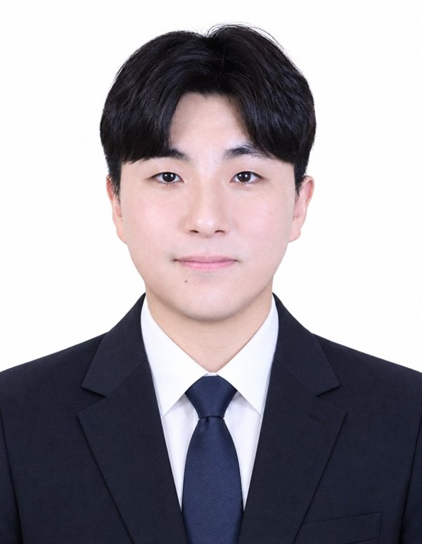
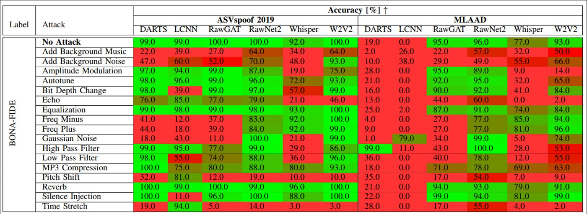
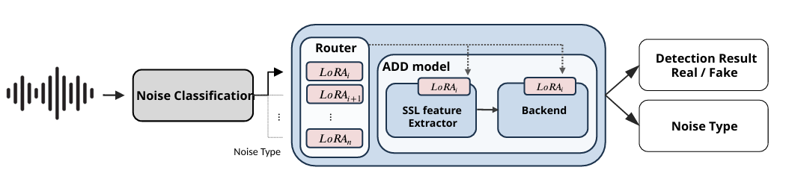
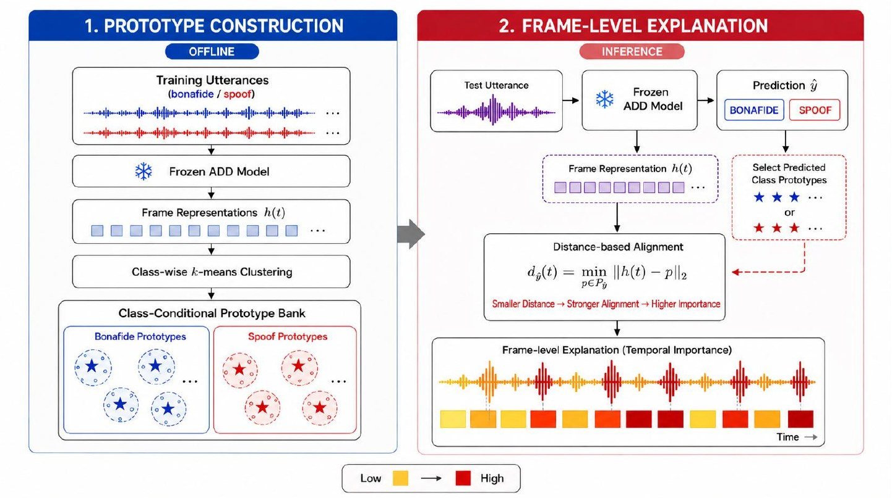
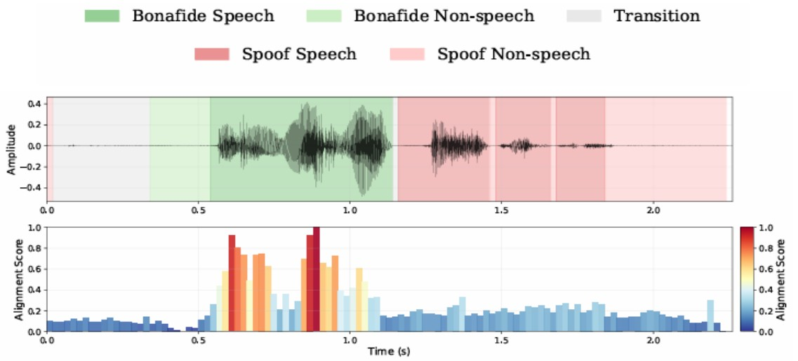
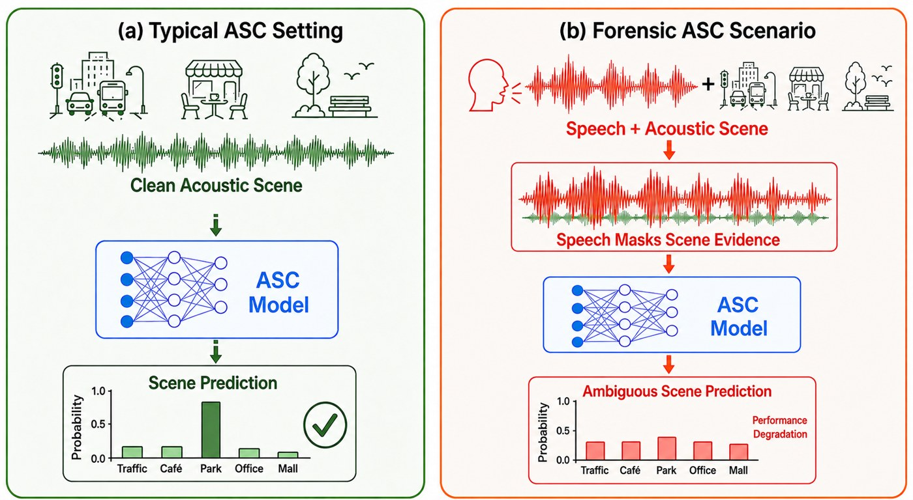
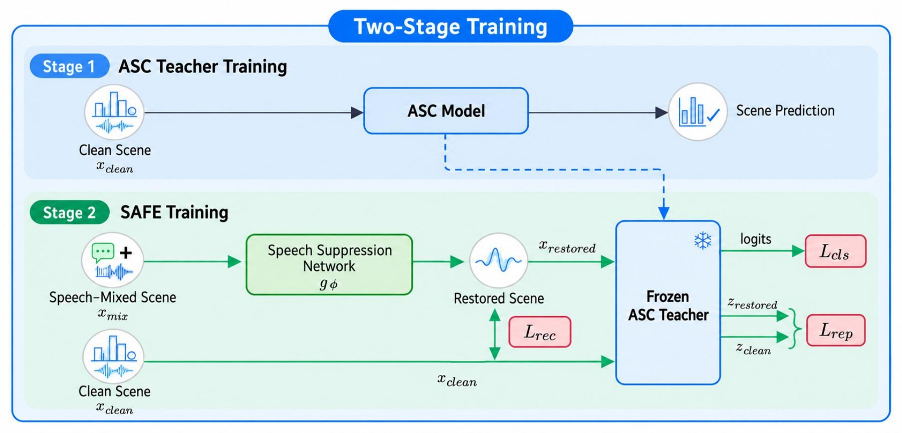
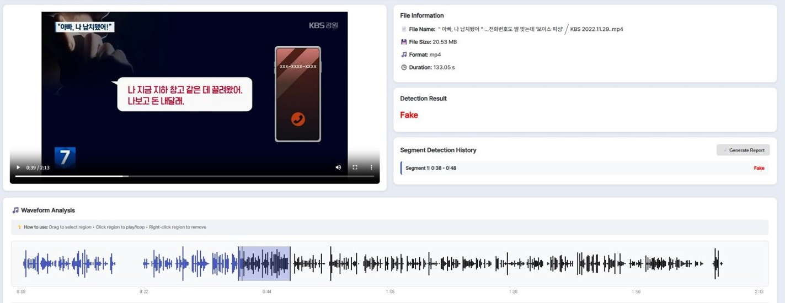
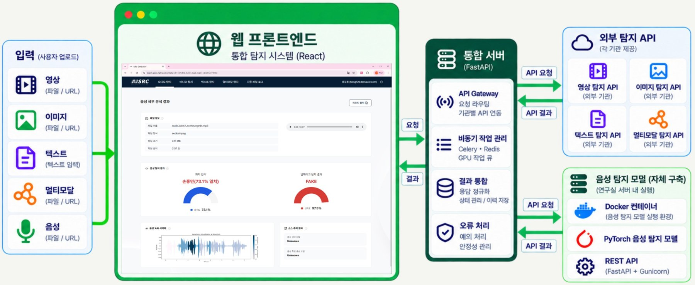

2017.04 – 2017.08 · 팀원
SOC 태권로봇 경진대회
상대 로봇의 동작에 반응해 회피·공격·방어를 수행하는 휴머노이드 로봇. 관절 모터에 과부하가 걸리지 않는 범위에서 태권도 동작 모션을 설계하고 하드웨어를 관리했습니다.
AI Research & Engineering · 이웅재
실환경에서도 강건한 오디오 딥페이크 탐지를 연구하고, 그 모델을 서비스와 시스템으로 만들어 왔습니다. 논문 작성부터 API·Docker 기반 배포, 여러 기관의 AI 모델 통합까지 직접 수행했습니다.

About
딥페이크 음성 탐지 연구실 인턴으로 시작해 연구원, 석사과정을 거치며 연구와 개발을 함께 해 왔습니다.
숭실대학교 전자정보공학부 IT융합학과 학사
2017.03 – 2024.02
숭실대학교 일반대학원 정보통신공학과 석사
2024.09 – 2026.08 · 통신망보안연구실
학위논문 · 실환경 잡음에 강건성을 갖는 오디오 딥페이크 탐지 프레임워크 연구
Audio Deepfake Detection · Robust AI · Explainable AI · Speaker Verification · Audio Forensics
Prologue · Undergraduate
2017 – 2023수상 2건로봇 모션, 영상처리, 임베디드, 적정기술까지 분야를 가리지 않고 시도했고, 졸업작품에서는 딥러닝 모델과 서버·앱을 하나의 서비스로 완성했습니다. 이 경험이 2023년 딥페이크 음성 탐지 연구실 인턴으로 이어졌습니다.
2017.04 – 2017.08 · 팀원
상대 로봇의 동작에 반응해 회피·공격·방어를 수행하는 휴머노이드 로봇. 관절 모터에 과부하가 걸리지 않는 범위에서 태권도 동작 모션을 설계하고 하드웨어를 관리했습니다.
2020.02 – 2020.11 · 팀장 · 영상처리 담당
휴머노이드 로봇이 라인 트레이싱으로 이동하며 4개 미션 중 3개를 완료하는 과제. 컨투어·Convex hull로 방위와 화살표를 인식하고, HSV 마스킹과 면적 비율로 구역·미션 완료 여부를 판별하는 영상처리 전 과정을 맡았습니다.
2021.07 – 2021.08 · 공모전
안전·재해 분야의 사회적 약자를 위한 적정기술 공모전. 겨울철 폭설로 비닐하우스가 무너지는 피해를 줄이기 위해, 지붕에 눈이 쌓이는 것을 최소화하는 구조 아이디어를 제안했습니다.
2023.06 – 2023.11 · 졸업작품
MediaPipe로 추출한 손 랜드마크 시퀀스를 LSTM으로 학습해 수어를 번역하고, Flask 서버(HTTP·Socket.IO)와 Flutter 앱을 직접 구축해 실시간으로 연동했습니다.
Core Competencies
Project 01 / 06 · Research
ICASSP 2026 · 제1저자 · Oral석사 연구국내·미국 특허입력 음성의 잡음 유형을 먼저 분류하고, 그 잡음에 맞게 학습한 LoRA 어댑터만 동결된 탐지 모델에 붙여 실환경에서도 탐지 성능을 유지합니다.


배경 소음·잔향·압축 같은 실환경 조건에서 탐지 성능이 크게 떨어집니다. 새 조건에 맞춰 다시 학습하면 기존 성능을 잊고, 환경마다 모델을 두면 비용이 커집니다.
Spectrogram·MFCC·F0를 융합한 CNN-BiLSTM으로 9가지 잡음 유형을 분류하고, 해당 잡음 도메인의 LoRA 어댑터를 골라 탐지 모델에 적용합니다.
Project 01 / 06 · Result
Project 02 / 06 · Research
WISA 2026 · 제1저자 · OralExplainable AI탐지 모델을 다시 학습하지 않고, 음성의 어느 프레임이 Real 또는 Fake 판단에 가까운지를 점수로 보여 줍니다.

Project 02 / 06 · Result
중요한 프레임(Pos)을 가리면 성능이 빠르게 무너지고, 덜 중요한 프레임(Neg)은 가려도 성능이 유지됩니다.
| 10% | 20% | 30% | ||||
|---|---|---|---|---|---|---|
| K (Kb/Ks) | Pos ↑ | Neg ↓ | Pos ↑ | Neg ↓ | Pos ↑ | Neg ↓ |
| 2 (1/1) | 9.74 | 8.03 | 16.58 | 7.89 | 37.71 | 8.88 |
| 4 (2/2) | 9.49 | 7.85 | 13.65 | 7.64 | 28.75 | 9.35 |
| 8 (3/5) | 8.61 | 7.77 | 10.99 | 7.48 | 24.29 | 9.56 |
| 16 (4/12) | 8.77 | 7.78 | 13.14 | 7.68 | 31.81 | 9.28 |
마스킹 전 EER 7.85% · SSL-Conformer+TCM · In-the-Wild

Project 03 / 06 · Research
ICASSP 2027 · 제1저자 · 심사 중Audio Forensics배경음으로 녹음 장소를 추정하는 장면 분류에서, 음성은 억제하고 장소 단서는 보존합니다.


수사용 녹음에는 대부분 음성이 섞여 있어 배경음 단서가 가려지고, 장면 분류 성능이 크게 떨어집니다.
깨끗한 장면으로 학습한 분류 모델을 동결해 교사로 두고, 음성 억제 네트워크를 복원·표현 보존·분류 손실로 지도 학습합니다.
Project 03 / 06 · Result
다른 음성 제거 기법은 한쪽 환경에서 오히려 성능이 떨어졌지만, SAFE는 두 환경 모두에서 가장 크게 향상했습니다.
| Method | 한국어 기반 환경 | 영어 기반 환경 |
|---|---|---|
| Baseline | ||
| 억제 미적용 | 68.3 | 56.3 |
| 음성을 추정해 빼는 방식 | ||
| MossFormer2-SE | 76.9 (+8.6) | 45.4 (−10.9) |
| Demucs | 33.3 (−35.0) | 11.0 (−45.4) |
| 장면 신호를 복원하는 방식 | ||
| Liu et al. | 74.4 (+6.1) | 41.8 (−14.6) |
| SAFE (Ours) | 81.0 (+12.7) | 68.6 (+12.3) |
Trident of Poseidon: A Generalized Approach for Detecting Deepfake Voices
Grad-CAM을 이용한 딥페이크 음성 탐지 시스템의 결정 설명
음성 변형 추적: 강건한 음성 처리를 위한 노이즈 분류 접근법
Defending Speaker Verification Against Deepfake: A Multi-Step Approach
Robust SASV System in Real-World Scenarios: A Fusion Approach for the WildSpoof Challenge
FLEX: Frame-Level Explanations for Trustworthy Audio Deepfake Detection
Explaining Suspicious Speech Beyond Binary Deepfake Detection: A Five-Module Proposition-Centered Evidence Profile
SAFE: A Speech Suppression-Based Acoustic Scene Classification Framework for Environmental Evidence in Audio Forensics
Project 04 / 06 · Engineering
N사 기술이전 · 약 1억 6,500만 원방송 시연우수성과 100선
Project 05 / 06 · Engineering
경찰청 R&D대학 3곳 · 기업 1곳독일 LKA 제공
Project 06 / 06 · Automation
개인 프로젝트로컬 LLMRAG매일 최신 논문을 모아 로컬 LLM으로 요약하고, 지식 그래프와 벡터 DB로 정리해 의미 기반으로 검색할 수 있게 만든 개인 연구 파이프라인입니다.
Awards & Activities
실시간 딥페이크 음성 탐지 기술 개발 및 상용화
실환경 딥페이크 탐지·화자 인증 성능 평가
기술 사업화 가능성 인정
Contact
함께 이야기 나누고 싶습니다.
wcn4457@naver.com그 밖의 저장소
© 2026 이웅재 · Woongjae Lee